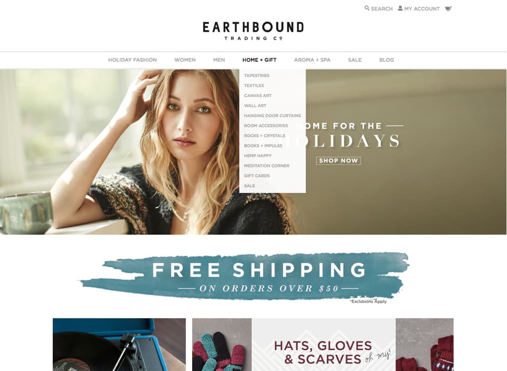
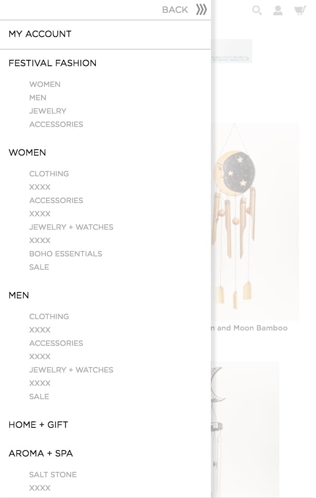
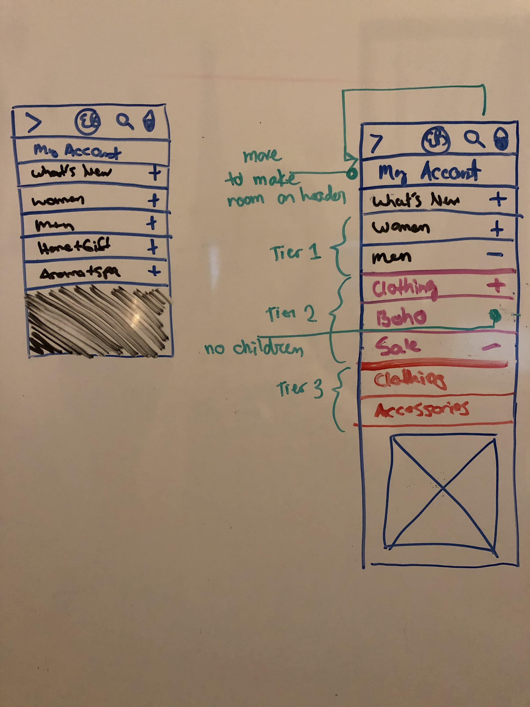
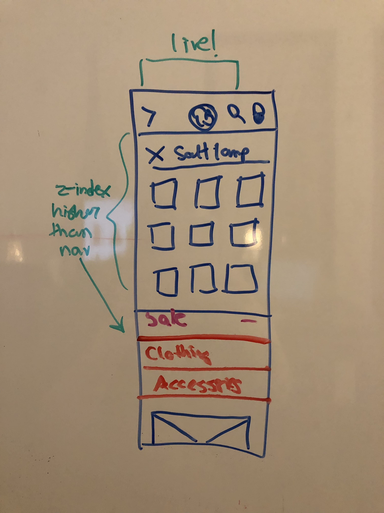

Nav redesign
www.earthboundtrading.com
Since the site was built 3 years ago, the navigation had not evolved and it led to low pageviews on most third and forth tier categories. The navigation was in need of some love and accessibility.

The challenge
When the site first launched 3 years ago the menu navigation was deep. A user started by hovering over the main navigation and a 2nd tier menu displayed. When selecting a 2nd tier category a new page loaded with a 3rd tier of navigation and so on. We found pageviews were extremely low on 3rd and 4th tier categories. The navigation lacked responsiveness especially on mobile where all the navigation menues remained horizontal, which is a problem for Earthbound because we have numerous categories.
Research and discovery
Some of our competitors continue to practice deep navigation, but others consistenly embraced the meganav. The meganav would meet our need to bring deep categories to front forefront. By embracing this modern approach new problems presented themselves. There was a spotlight on how organized our categories that shared the same space with less relevant categories.
Our product can be quite varied and there was a concern that neighboring categories that are unusual could be jarring for the user to understand the navigation section as a whole. It was important to us that users could intuitively know where to find products.
Our research presented the need for a rule to keep the first tier navigation consistent for users. It was reported that inconsistent behavior of navigation menues led to user confusion. This meant all first tiers could not just be a link.
Old desktop cart
Old mobile cart
Sketching wireframes
After presenting initial sketches to stakeholders there was push back on our rule to never allow first tier navigation to change. Stakeholders wanted special campaigns to have a seat next to major categories to give the campaign the most exposure.
Typically we have a first tier category called "What's New" to comprise special campaigns, as did our competitors. We compromised by switching out "What's New" with the name of new campaigns in order to prevent the main navigation from bloating. As a developer I emphasized the improtance on keeping the main navigation consistent from a technical point of view in order to prevent unexpected results.
All about context: We considered one of our user personas to dictate what was priority in the hierarchy of the navigation. Our user persona is driven by deals and are on a tight budget because they are between 18-24. This lead us to keep our 'Sale' category prevalent and quick to access.
Desktop Strategy: We came up with a plan for CMS admins to follow that would keep the content organized. Relavent content should be in the same column or side by side. Any second tier categories that have no children were to go in the last content column or at the bottom of a relvant column. The last column in the menu is reserved for images. This was a solution to promote low page viewing categories or to feature collections or to promote season items like gift cards.
Collapsing to the rescue!
What about search?
Mobile Strategy: The concern was how we would display three tiers of menus. From my development standpoint I suggested we have two levels of collapsing menus and one big wrapping menu that slides in and out to kick the whole thing off.
We used background color variation to differentiate between second and third tier menus. Second or third tier categories with no children would not have an expandlable icon.
To keep the header uncluttered we needed to move an icon somewhere else. After going through our analytics we found that 'My Account' was the least likely path user took to enter their account. Most of the time users entered their account through a form in the checkout process. This was an easy decision to move the 'My Account' icon and the only place it made sense to move it to was within the nav menu, so we placed it at the top.
What about search? From my standpoint I knew the search menu would conflict with the nav menu. We had to decide which would overlay the other in the event a user opened both of them. What was more important?
After digging through our analytics it was obvious most users preferred search or ended up searching when they could not find what they wanted in the nav.